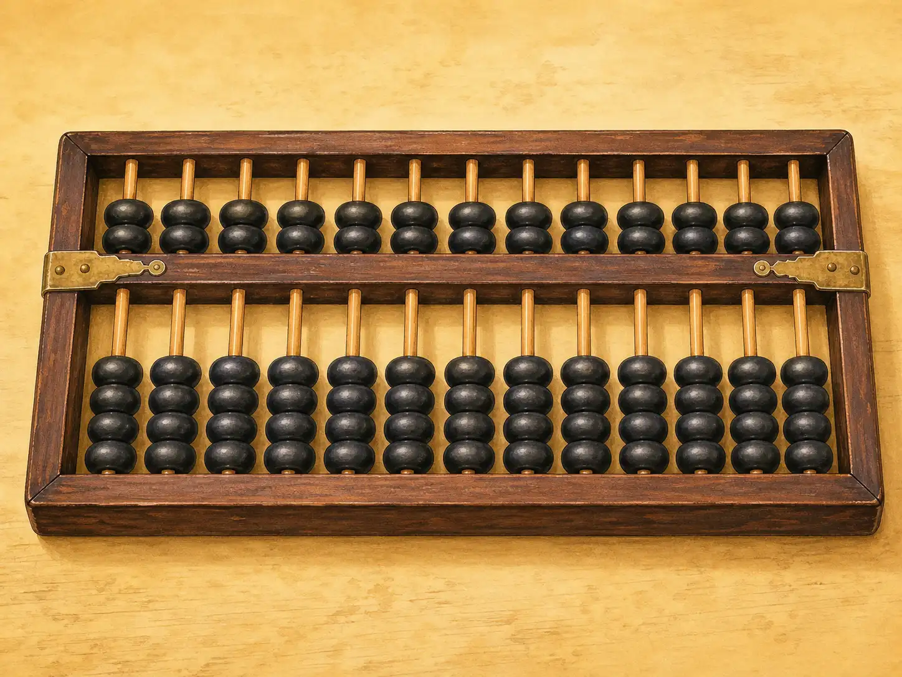
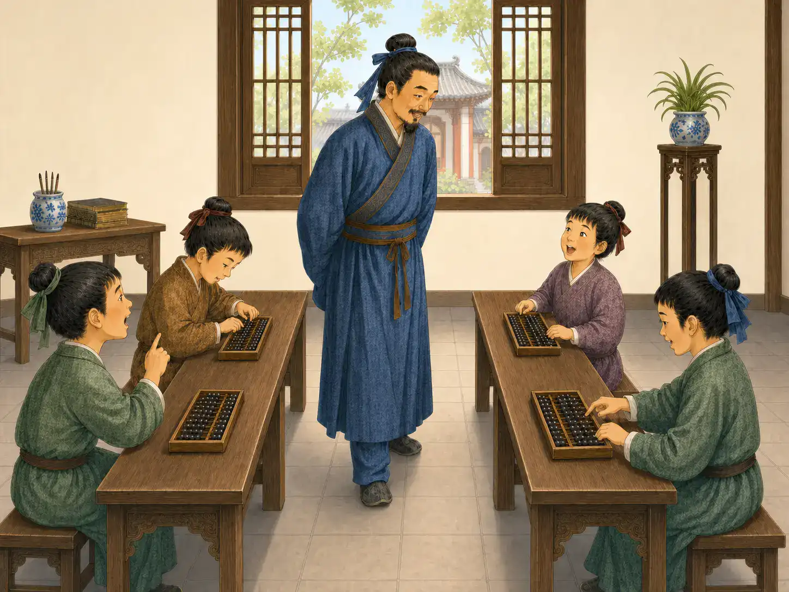
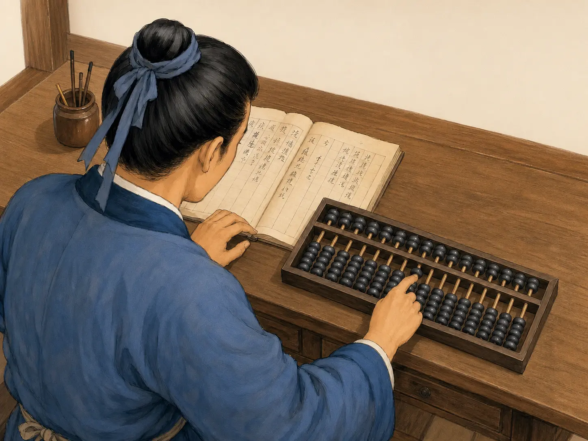

算盘：噼里啪啦的计算器
The Abacus: A Click-Clack Calculator
Page 1
摸得到的数字
A Number You Can Touch

This traditional Chinese abacus has two upper beads and five lower beads on each rod; only beads moved toward the beam are counted.
看看一把suànpán · 用算珠在档杆上移动进行计算的工具。。所有珠子都离开中间的横梁时，好像什么数字也没有。可是，只要把一颗珠子拨到横梁旁边，木框里就有了一个数。
传统的中国算盘，横梁下面的珠子一颗通常表示“一”，上面的珠子一颗表示“五”。只有拨到横梁旁边的珠子才算数。比如，把上面的一颗珠子和下面的两颗珠子都拨过来，这一档表示的就是七。
不过，算盘真正聪明的地方，还不只是这些珠子，而是珠子在哪一档。一档可以表示个位，旁边一档表示十位，再旁边一档表示百位。所以，同样是一颗表示“一”的珠子，放在百位上，它表示的就不是一，而是一百。
其实，我们写数字的时候也在做同样的事情。325里面的3是三个百，2是两个十，5才是五个一。只不过写在纸上时，这些“位”看不见；到了算盘上，每一个位置都摆在眼前，手指也可以直接碰到它。
Look at an suànpán · 算盘 · A calculating tool whose beads slide along rods toward or away from a central beam. when all the beads are resting away from the middle beam. It does not seem to be showing much of anything. Then one bead slides toward the beam, and suddenly the wooden frame is holding a number.
On a traditional Chinese abacus, the beads below the beam are worth one each, while the beads above are worth five. Only the beads moved toward the beam are counted. Push one upper bead and two lower beads toward the middle, for example, and that rod shows seven.
But the really clever part is not the beads. It is the rods. One rod can stand for ones, the next for tens, and the next for hundreds. That means a bead worth one on the hundreds rod does not mean “one” at all—it means one hundred. The same little wooden bead can hold a completely different value simply because it has moved to a different place.
That is something children already do when they write numbers. In 325, the 3 means three hundreds, the 2 means two tens, and the 5 means five ones. The abacus lets your fingers build that same idea.
Page 2
有节奏的数学
Math with a Rhythm

Children recite abacus formulas with their teacher while practising the matching bead movements on their own frames.
看懂珠子只是第一步。要真正用算盘算得快，还要知道数字变化时，手指下一步该往哪里走。
如果一档里的数凑够了十，就不用想办法在这一档塞进十颗“一”。把这一档拨回去，再到旁边的十位拨进一个“一”，十个一就变成了一个十。我们在纸上算加法时会“进位”。在算盘上，手指真的把这个“进位”做了出来。
中国传统的zhūsuàn · 使用算盘和口诀进行计算的中国传统计算方法。还有一套很特别的学习方法：口诀。一代又一代学习算盘的人，会把运算规则编成简短、顺口的句子记下来。老师或者熟练的人念口诀，学习的人一边记，一边跟着拨珠子。练得久了，规则慢慢变成了熟悉的手指动作。今天，联合国教科文组织介绍中国珠算时，仍然特别提到这些代代相传的珠算口诀。
所以，算盘课常常很有节奏。手指一动，珠子碰上横梁，教室里就响起一阵噼里啪啦的声音。每响一下，都表示算盘上的数字又变了。
Knowing what the beads mean is only the beginning. To calculate quickly, you also have to know what to do when the numbers change.
Suppose the beads on one rod add up to ten. There is no need to squeeze ten ones onto that rod. Instead, you clear them away and move one bead on the next rod. Ten ones have become one ten. On paper, we call that carrying. On an abacus, your fingers actually do it.
For generations, people learning Chinese abacus calculation, or zhūsuàn · 珠算 · The Chinese tradition of calculating with an abacus and memorized oral formulas., memorized short rhyming formulas that told them which beads to move. A teacher or experienced user could recite a rule, and the learner’s fingers followed it across the frame. With enough practice, the movements became quick and familiar. UNESCO still describes these oral formulas as an important part of the Chinese abacus tradition.
That is why an abacus lesson can have such a strong rhythm. A row of fingers moves, beads strike the beam, and the room fills with little clicks. The sound is not just noise. Each click means that a number has changed.
Page 3
柜台后面的算盘
Behind the Shop Counter

A practised abacus user reads figures from a ledger while quickly moving beads to check the accounts.
现在，把算盘放到一家旧时商店的账本旁边。一天的买卖结束了，有价格要相加，有银钱要扣掉，还有一长串账目要核对。熟练的算盘手不需要每拨一颗珠子都停下来想一想。眼睛可以顺着账本往下看，手指已经在算盘上不停地移动。
到了Míng cháo · 1368年至1644年的中国朝代。，我们已经能在数学书里清楚看到和后来十分相似的算盘，同时还有完整的珠算口诀。当时，算盘已经广泛用于商业和统计。珠算当然不只能做加法、减法；熟练以后，还可以做乘法、除法和更复杂的计算。
算盘的木框里面并没有藏着什么机关。它算得快，靠的是很简单的几样东西：每一档代表不同的位置，一套清楚的运算规则，还有一双练习过很多很多次的手。
账本上的数字一行一行往下走，手指也在珠子之间来回移动。噼啪声中，原本写在纸上的数字，变成了手指下面一个个清清楚楚的位置。
Now put the abacus beside a ledger in a busy shop. There may be prices to add, payments to subtract, and long columns of numbers to check. A practiced user does not have to stop and puzzle over every bead. The eyes can move down the written numbers while the fingers work across the rods.
By the Míng cháo · 明朝 · The Chinese dynasty that lasted from 1368 to 1644., the familiar Chinese abacus was clearly shown in arithmetic books, together with formulas for using it, and it had become an important tool in commerce and accounting. Chinese zhusuan could be used not only for addition and subtraction, but also for multiplication, division, and much harder calculations.
There was nothing magical inside the wooden frame. No gears were turning, and nothing was hidden underneath. Its speed came from something much simpler: place value, a set of rules, and fingers that had practiced those rules again and again.
A merchant could look down at a page full of written numbers, move a few rows of beads, and hear the answer taking shape. Click. Clack. The numbers were no longer only marks on a page. They were right there under the fingertips.